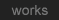
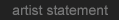
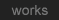
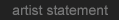

|
Born New Westminster, BC, Canada. Lives & works in Montréal Canada.
E-mail: video @ machproductions.com
EDUCATION
2009: HD-Camera workshop, Videographe: Montréal
2008: Design of interactive arts workshop, Videographe: Montréal
2006: Creative experimental 16mm Film: Main Film Montréal
2004: Intermediate Final Cut Pro Workshop: Main Film
2004: Writing For A Documentary Workshop: Main Film
2004: Developing The Documentary Workshop: Main Film
2004: Introduction to film Directing Workshop: Main Film
2004: Lighting For Directors And D.O.P.S. Workshop: Main Film
1995: Introduction to DVD Standards workshop, Sonic Solutions: Montréal
1995: CS2000 sound mixing console training, Euphonix: Montréal
1993: Solid State Logic G+ sound mixing console training, SSL: Oxford, England
1989-91: Computer Electronics, Vancouver Vocational Institute: Vancouver
1988-90: Audio Video Productions, Institute of Communication Arts: Vancouver
GROUPS SHOWS
2010: Maison de la culture (Côte-de-Neige, Ahuntsic, Rivières-des-Prairies )
2010: Maison de la culture Frontenac: Montréal
2009: Visite d'ateliers 09, Lezarts: Montréal
2008: "Cote Obscur" La Chaufferie, Lezarts artist coop: Montréal
2008: "Natural Selection" Gallery goodfriday: Brussels, Belgium
2006: Open Studio, Lezarts artist coop: Montréal
2005: Open Studio, Lezarts artist coop: Montréal
2004: "video night", Huuto Galleria: Helsinki, Finnland
FESTIVALS
2010: Muff 5 (Montréal underground Film festival): Montréal
2010: The 2nd AllArtNow International New Media Art Festival: Damascus, Syria
2009: VAD 09: Girona, Catalan, Spain
2008: Media 2008, The Niagara Indie Filmfest: Niagara, Canada
2007: WRO Biennial: Wrocaw, Poland
2005: Montréal Super8 Film Festival: Montréal
2004: Montréal Super8 Film Festival: Montréal
VIDEO & AUDIO
2009-2010: Director,Music,editing "Objets Secrets de l'Atelier":
2009-2010: Editor on Ils révaient d'étoiles http://www.astro.uMontréal.ca/~domm:
2009: Podcast director,editor "Quebec Bio-Imaging Network Summer School 09": Montréal
2009: Podcast director,editor "Quebec Bio-Imaging Network Connectivity Workshop 09" : Montréal
2006-07: Editor, sound technician for Stéphanie Morissette: Costa-Rica/Helsinki/Montréal
2005: Editor for video "Coma" for Stéphanie Morissette: Costa-Rica/Montréal
2005: Sound recordist Interview with Visual artist Fatima Augusto: Paris, France
2004: DVD author and sound design for artist Henry Fong: Montréal, Canada
2004: Sound design, Video Editor: Stéphanie Morissette's video "Lava Line": Montréal
2004: Sound design, Video Editor: Stéphanie Morissette's video "night shot": Montréal
2004: Video editor, technical aide: Stéphanie Moissette's animation "Fashion": Montréal
2004: DVD author: Stéphanie Morissette's "Serie d'islande" DVD: Montréal
2004: Sound recordist for various performances by Pianist Derek Yapple- Schubert and
Editor ,DVD Author for Derek Yapple-Schubert's benefit concert DVD: Montréal
2003: Sound design and DVD authoring for 3D-artist Henry Fong's DVD: Montréal
2002-03: Engineer/Mixer album The Donkeys winning "demo of the year": Montréal
2002: Sound engineer Live performance recording of Pianist Françis Perron: Montréal
2001-02: Sound design, FX and Sound Engineer for various Kaydara Animations: Montréal
1997: Producer/Engineer for ModelM's album "The Killing Gods": Toronto
1995: Producer/Engineer for 6 month recording session with ModelM ( original members Terrance Dick and Martin Prémont): Toronto
1994: Engineer/Producer Buff Muffin ( Bottom 12): Los Angeles, USA
TECHNICAL CONSULTING, ASSISTANCE
2010: Installation technician, Lindsey Page exposition at Eric Devlin Gallery, organized by Vidéographe, Montréal
2010: Course assistant, "Light weight documentary": Mainfilm, Montréal
May 9 1994: Assistant engineer "The Late Show With, David Letterman from Los Angeles)": CBS Los Angeles, USA
1994: Technical consultant for sound designer on Light Storm Entertainment's feature film "True Lies": Los Angeles, USA
1993-1994: Technical consultant for sound effects editor Steven Flick on Disney's preproduction test for "The Lion King': Los Angeles, USA
ART IMPLICATION
2009-2010: Member CQAM (Conseil québécois des arts médiatiques), Montreal
2008-2010: Resident, volunteer; Lezarts artist coop: Montréal
2004-2010: Active member; Main Film, film maker's association: Montréal
2005-2006: Board of Directors; Main Film, film maker's association: Montréal
2005-2006: Resident, volunteer; Lezarts artist coop: Montréal
JURY
2009-2010: Jury member for co-production program, Videographe Productions, Montréal
GRANTS
2009: CALQ travel grant ( VAD film Festival )
VIDEOGRAPHY
2010: Objets Secrets de l'Atelier ( commissioned documentary for Maison de la culture Côte de Neige )
2010: Usine, animation co-producer Stéphanie Morissette
2009: America mon amour, animation co-producer Stéphanie Morissette
2007: Tank,1min,42sec. suggestive commentary/question on/about American views of terrorism
2006: Producers Comment, 7min.45 sec. a video reflecting on DVD supplements with producer's comments and how they often have nothing to say.
2006: Instant inflation, Sucking the economy, 2 min. Do your own currency inflation.
2005: Harlap time, digital media: Using medical imaging techniques to produce effects and unorthodox imaging textures
2005: Mistake #2 4 minutes: A series of time laps works as a sequel to Bell Mistake
2004: Bell Mistake, 3 min: A super 8 film using broken camera to see what effect it will produce.
BIBLIOGRAPHY
Delgado, Jérôme, "Du nid de couturière à la coop d'artistes", Le Devoir, February 5th 2010.
|

 


